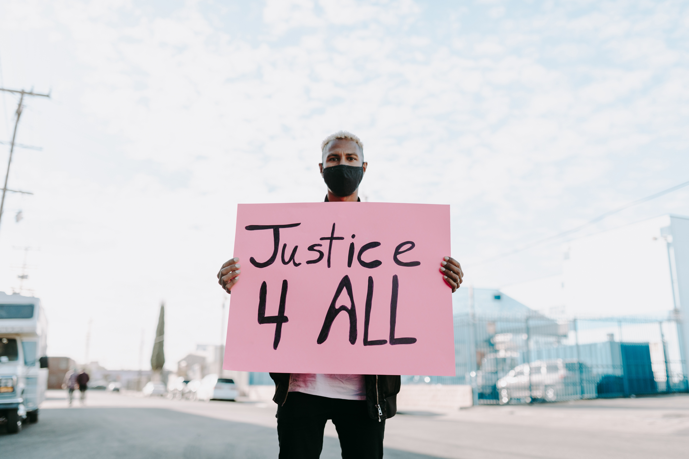

¿Cual es el objetivo?
Si la justicia existe, tiene que ser para todos; nadie puede quedar excluido, de lo contrario ya no sería justícia. (Paul Auster)
Promover sociedades pacíficas e inclusivas para el desarrollo sostenible, facilitar el acceso a la justicia para todos y crear instituciones eficaces, responsables e inclusivas a todos los niveles. Ya que para lograr el objetivo tambien son necesarias sociedades pacificas, justas e inclusivas. Las personas de todo el mundo no deben tener temor a ninguna forma de violencia y tienen que sentirse seguras a lo largo de su vida, independientemente de su origen étnico, religión u orientación sexual. A fin de avanzar en la consecución de los Objetivos de Desarrollo Sostenible, necesitamos instituciones públicas eficaces e inclusivas que puedan proporcionar educación y asistencia sanitaria de calidad, aplicar políticas económicas justas y brindar una protección inclusiva del medio ambiente. Ademas de alcanzar un nivel en cual nosostros los seres humanos debemos pues proponer. Debemos alzar la voz, no dejar que ocurran estos actos y ademas que debemos de cambiar con la ideologia que fue adaptando en nuestro Pais y asi librarnos de la corrupcion que existe.
¿Que hay que hacer para lograrlo?
Para lograr la paz, la justicia y la inclusión, es importante que los gobiernos, la sociedad civil y las comunidades trabajen juntos para poner en práctica soluciones duraderas que reduzcan la violencia, hagan justicia, combatan eficazmente la corrupción y garanticen en todo momento la participación inclusiva. La libertad para expresar las propias opiniones, en privado y en público, debe estar garantizada. Las personas deben poder participar en el proceso de adopción de las decisiones que afectan a sus vidas. Las leyes y las políticas deben aplicarse sin ningún tipo de discriminación. Las controversias deben resolverse mediante sistemas de justicia y política que funcionen bien. Las instituciones nacionales y locales deben rendir cuentas y tienen que prestar servicios básicos a las familias y las comunidades de manera equitativa y sin necesidad de sobornos.
Generalizar siempre es equivocarse
La violencia armada y la inseguridad tienen un efecto destructivo en el desarrollo de un país, que afecta al crecimiento económico y que suele provocar agravios persistentes entre las comunidades.
La violencia, en todas sus formas tiene un efecto generalizado en las sociedades. La violencia afecta a la salud, el desarrollo y el bienestar de los niños, así como a su capacidad para
prosperar, y provoca traumas y debilita la inclusión social. La falta de acceso a la justicia implica que los conflictos quedan sin resolver y que las personas no pueden obtener ni protección ni reparación.
Las instituciones que no funcionan con arreglo a la ley son propensas a la arbitrariedad y al abuso de poder, y tienen menos capacidad para prestar servicios públicos para todos.
Tambien se deberia de poner en practica la inclusion en las personas, ya que en algunos casos no tenemos es actitud o no queremos briandar el apoyo a una persona, que necesita integrarse a la sociedad, ya que
estas han perdido el deseo de participar y de contribuir, porque se han mantenido excluidas. La inclusión se formula como solución al problema de la exclusión que es causado por circunstancias como la pobreza, el analfabetismo,
la segregación étnica o religiosa, entre otras cosas. Por eso se debe de enseñar los tipos de inclusioncomo la social y la educativa, ya que de esto aprendemos a brindar oportunidadesd y segundas oportunidades a esas personas
que en estos tiempos, en verdad necesitan de alguno.
¿Que podemos hacer como ciudadanos?
Interesarnos realmente por la actuación de nuestro gobierno. Concienciar a nuestra propia comunidad sobre la realidad de la violencia y sobre la importancia de construir sociedades pacíficas y justas, y determinar
de qué manera podemos contribuir a la consecución de los Objetivos de Desarrollo Sostenible en nuestra vida cotidiana.
Ejercer nuestro derecho a exigir que los funcionarios electos
rindan cuentas de su actuación. Ejercer nuestro derecho a la libertad de información y compartir nuestra opinión con los representantes electos.
Ante una situación de conflicto, propóngase conocer y entender las motivaciones e
intereses del otro. Mediante el diálogo, busque alternativas creativas para transformarla en una oportunidad de aprendizaje. Sea tolerante ante las diferencias. No trate de imponer sus puntos de vista, costumbres o proyectos desconociendo
las identidades, intereses y visiones del mundo de los demás. Impulsar el cambio, promover la inclusión y el respeto hacia las personas de diferente procedencia, origen étnico, religión, género, orientación sexual u opinión. Juntos podemos ayudar a mejorar las condiciones para lograr una vida digna para todos.